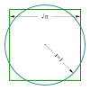

area
property

Source: Wikipedia
Wikipedia Page (Something wrong with this association? Let us know.)
Wikidata Page (Something wrong with this association? Let us know.)
Occurs in:
- model_simulation_land_crop_allocation__area
- observation_land_crop_allocation__area
- automobile_front_x-section__area
- drainage-basin__area
- channel_x-section__area
- river-delta_channel~main_entrance_x-section__area
- river-delta_plain~lower-and-plain~upper__area
- river-delta_plain~lower__area
- river-delta_plain~subaqueous__area
- river-delta_plain__area
- river-delta_plain~upper__area
- river-delta_x-section__area
- earth_interior_earthquake_fault_plane_rupture__area
- glacier_ablation-zone__area
- glacier_accumulation-zone__area
- glacier_surface__area
- glacier_top_surface__area
- lake_surface__area
- model_grid_cell__area
- projectile_x-section__area
- sea_ice__area
- sphere_surface__area
- storage-tank~open-top_outlet_x-section__area
- storage-tank~open-top_x-section~horizontal__area
- model_grid_cell_face__area
- model_grid_dual-cell__area
- model_grid_dual-cell_face__area
- model_grid_primary-cell__area
- model_grid_primary-cell_face__area